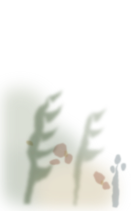
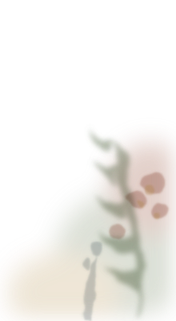

One hundred commands, one to a page
100%
Drag the page to turn it · drag the glass across it
Contents
Ticket notes
Commands run
One hundred Windows commands, one to a page. What it is, what it does, a plain comparison so it stays in the memory, and the moment on a help desk when you would reach for it. Tick the ones you ran, write down what you saw, and the page keeps the note for the ticket. Nothing is ever run from here. Nothing you type is saved to this browser.
Every command was checked against Microsoft documentation before it was set. Where two sources disagreed, both readings are kept in the sources file beside this page.